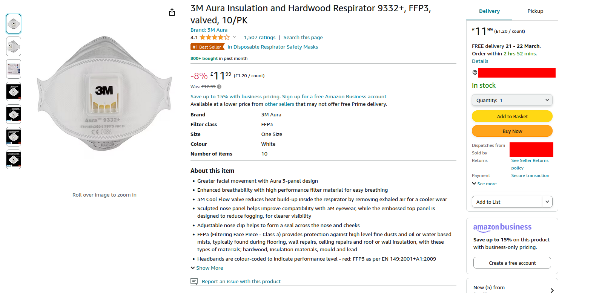
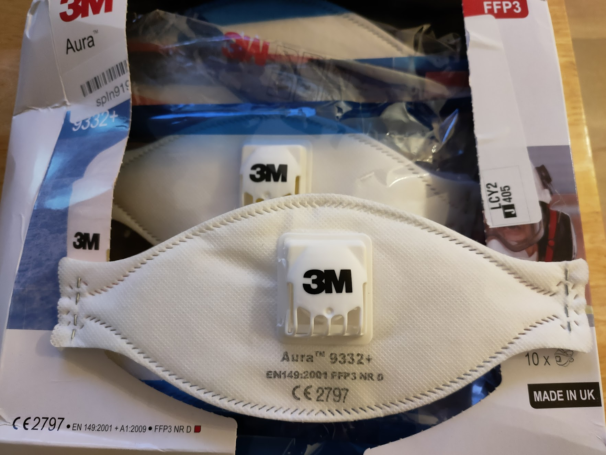
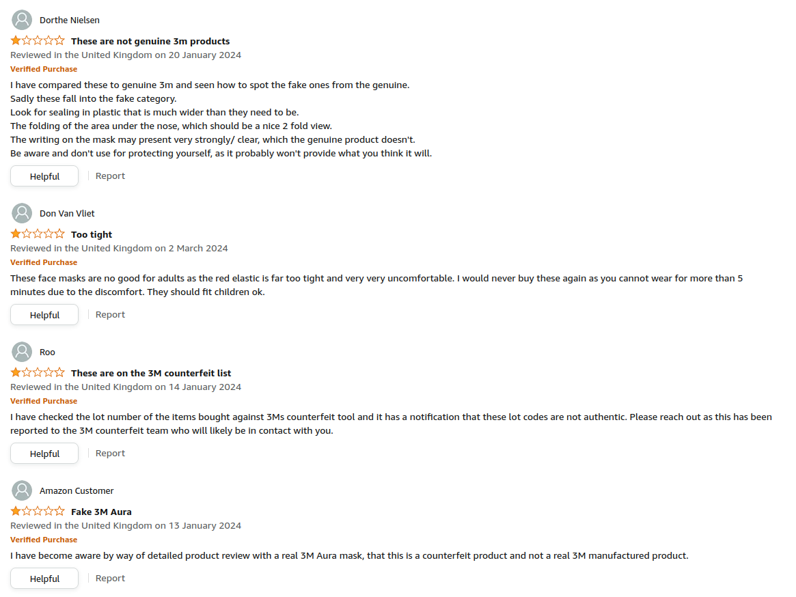
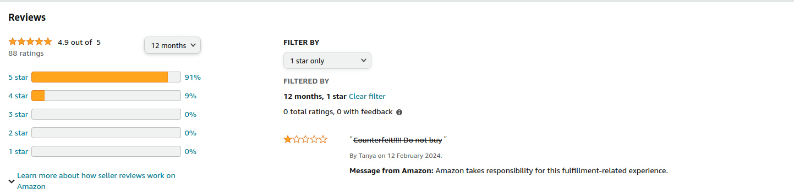
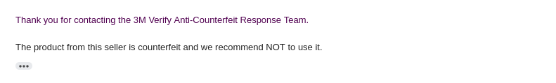

I needed a mask for some DIY, so I searched on Amazon for a masks from a known brand.

It has lots of good reviews, so I bought it.
The box looks normal, the masks are invidially wrapped, and look like the listing.

It's only because I bought from a third party seller on Amazon, and the product was cheaper than expected, that I took a second look.
If you filter reviews by 1-star, you find people complaining of counterfeits.

If you look at the seller page, it's much, much worse. It says there's 0% 1-star reviews. If you filter by 1-star again, you see this.

I filled out 3M's form to find out if my masks are counterfeit. After more than 4 weeks, I got what I expected.

Amazon refunded me after using the web chat.
I've got a lot of questions. Why is the listing still up? Why are reviews complaining of counterfeits removed? Why did it take so long for 3M to confirm? How is the average person supposed to spot this?